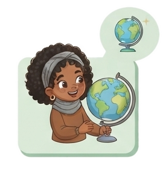

Regional AntioquiaPrevención de violencias · Primera infancia
CAPÍTULO I
Contexto y situación de las violencias
¿Qué está pasando con niñas y niños de 0 a 5 años?

PARD ACTIVOS · MAYO 2024
10.034
procesos de niñas y niños de 0 a 5 años activos en el Proceso Administrativo de Restablecimiento de Derechos.
¿Por qué ingresan? Motivos de ingreso al PARD
Omisión o negligencia
5.117 51,0%
Falta absoluta o temporal de responsables
2.200 21,9%
Violencia sexual
1.066 10,6%
Abandono (con o sin discapacidad)
410 4,1%
Violencia física
214 2,1%
Violencia psicológica
131 1,3%
Porcentaje sobre 10.034 procesos. Incluye además otros motivos (338), reunificación familiar (213) y conductas sexuales entre menores de 14 años (167).
Violencias reportadas · niñas y niños de 0 a 5 años
2.222
Violencia intrafamiliar
2.546
Violencia sexual
Casos reportados · Observatorio de Violencias (ML), 2022
Antioquia en la presentación ICBF
328
Violencia intrafamiliar
384
Violencia sexual
1.373
PARD abiertos
643
Por omisión o negligencia
Una mirada nacional: la violencia empieza temprano
De las personas de 18 a 24 años, 41,5 % reportó haber sufrido violencia antes de cumplir 18:
32,1 % física15,2 % psicológica11,4 % sexual
EVCNNA 2018. Las formas de violencia pueden presentarse juntas.
Lectura territorial
¿Cuáles son los tipos de violencia más frecuentes en tu territorio contra niñas y niños, desde la gestación hasta los cinco años?
RegionalCentro zonalMunicipioUDS
Cómo leer estas cifras. Provienen de fuentes y años distintos (PARD a mayo de 2024, Observatorio de Violencias 2022 y EVCNNA 2018): no se suman ni se comparan entre sí. Detrás de cada número hay una niña o un niño que requiere protección.
Fuentes: ICBF Regional Antioquia, presentación «Prevención de violencias», 2024 (diap. 12-14); ICBF, Modelos de probabilidad de vulneración (EVCNNA 2018: OIM, CDC y MSPS, 2019). PARD: Proceso Administrativo de Restablecimiento de Derechos. ML: según rótulo de la presentación. Las cifras de Antioquia no indican fecha de corte en la presentación.